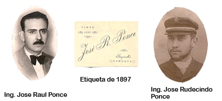
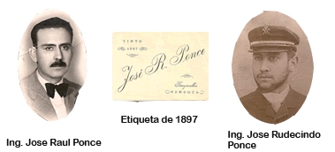

NUESTRA HISTORIA
 

La familia Ponce puede ostentar con orgullo no sólo una larga tradición de generaciones destacadas en la vitivinicultura nacional, sino incluso un importante protagonismo, desde la provincia de Mendoza, en la consolidación misma de la Argentina. Así ya en 1845, José Ponce , militar y periodista argentino, -luego de haber combatido en la batalla de Rodeo del Medio con el ejército de Lavalle y de su posterior exilio en Chile-, retornó a Mendoza donde fundó y dirigió El Constitucional de los Andes, el primer periódico provincial dedicado al progreso y la educación. Su hijo menor, José Rudecindo Ponce , después de egresar como ingeniero agrónomo de la Universidad de Lovaina, recorrió Europa recopilando los tratados enológicos más avanzados de la época, con el fin de enseñarlos y aplicarlos en nuestro país. Posteriormente fue fundador y profesor de la Escuela Nacional de Vitivinicultura, y miembro del Consejo de Educación de la provincia. En 1897 funda la bodega familiar, que tendrá continuidad en el mercado durante más de 70 años. Además fue diputado y convencional de la reforma constitucional de Mendoza de 1916. Su hijo mayor, José Raúl Ponce, en 1925 con sólo 30 años fue nombrado Director de la Escuela Nacional de Vitivinicultura,cargo que desempeñó durante 14 años, habiendo sido el titular que más tiempo estuvo a cargo. José Raúl logró en 1929 un cambio significativo respecto del establecimiento que pasó a llamarse Escuela Nacional de Agricultura y Enología , y del título otorgado que pasó a ser el de Agricultor Enólogo, incrementando tanto la oferta educativa como la investigación, puesto que empezó a abarcar otras disciplinas agronómicas y comenzó la enseñanza sobre genética . Continuando con esta invalorable herencia, César Ponce, nieto de José Raúl, miembro de la Asociación Mundial de Periodistas de Vinos y jurado de importantes concursos especializados, luego de haber sido socio fundador y director durante diez años de la revista Master Wine y haber obtenido el premio Cordillera 2005, enfrenta el desafío de recrear la bodega familiar, a partir de los viñedos de la familia y fincas asociadas y un acuerdo con el grupo internacional ARCOU, con el objeto de producir para el mercado argentino y mundial una línea de vinos y espumantes de media y alta gama: “La misión de nuestra bodega es descubrir la perfecta combinación entre los principales varietales de los mejores terruños de Mendoza, para lograr los mejores vinos Blend Premium”